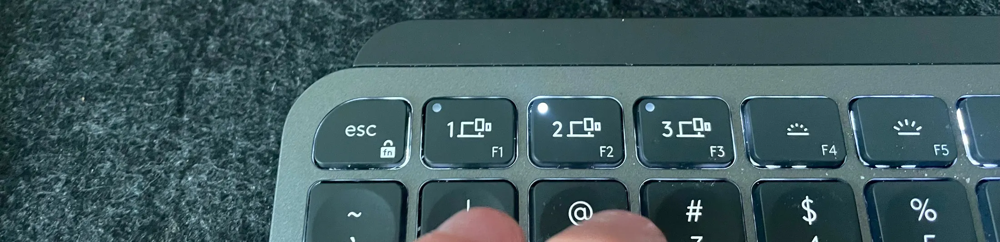
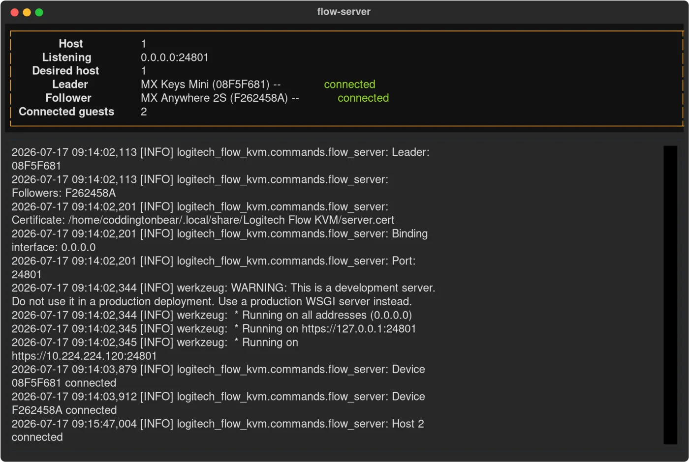
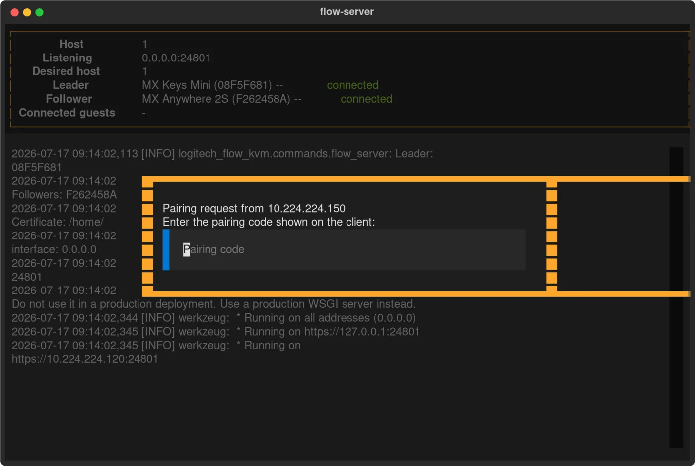
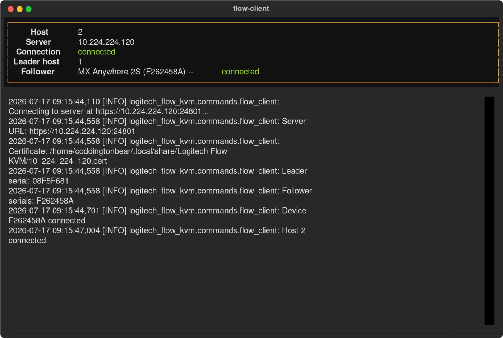

Flow stops at Linux
Logitech Options+ ships for Windows and macOS. If one of the machines under your desk runs Linux, it simply isn't part of the arrangement — no host following, no shared clipboard, no setting to turn on.
Logitech Flow — for the OS Logitech skipped
Your MX keyboard already jumps between three computers. This makes your mouse come with it — and your clipboard too. On Linux, where Logitech's own Flow has never worked.
MIT licensed Python 3.10 – 3.14 71 ★ on GitHub HID++ over your existing Unifying / Bolt receiver

host 2 · litWhy this exists
Logitech Options+ ships for Windows and macOS. If one of the machines under your desk runs Linux, it simply isn't part of the arrangement — no host following, no shared clipboard, no setting to turn on.
Multi-host hardware is per-device by design. Press host 2 on the keyboard, then find the tiny button underneath the mouse and press host 2 again. Then do it in reverse, thirty seconds later, when you switch back.
You copy an error message on one host and paste it… nowhere. So it goes through a chat window to yourself, or a pastebin, or gets retyped by hand.
How it works
There's no input streaming and no virtual monitor. Your mouse and keyboard stay on their own wireless link to whatever host they're on — this only tells them which host that should be.
The leader
Pick one device — a keyboard with host keys is ideal — as the leader. flow-server watches its
receiver for connect and disconnect notifications, so a host change is observed, not guessed at.

The link
Each host runs a client that subscribes to the server's event stream, so a switch propagates the instant it happens rather than on a poll. First connection walks through a pairing handshake: the client shows a six-digit code, you type it into the server, and from then on the link is TLS with a pinned certificate and a token.
--hostname, or by IP out of the box
The clipboard
When your keyboard leaves a host, that host's clipboard goes with it; when it lands, the clipboard is
waiting. Copy on the workstation, switch, paste on the laptop. Not comfortable with that? --no-clipboard
turns it off per host, on the server or on any client.

The stubborn part
A Logitech device never acknowledges a host-change command — you send it into the dark. So instead of sleeping and hoping, this keeps issuing the command until it observes the device arrive where it was sent, re-checks devices it believes are gone, and treats a receiver's "no link to that device" as evidence in its own right. A dropped notification or a sleeping mouse doesn't leave you half-switched.
# the loop, in the logs [INFO] Host 2 connected [INFO] Commanding F262458A → host 2 [INFO] Device F262458A no longer here [INFO] Converged: 1 leader, 1 follower
Setup
On the machine you'll use as the server. Note the IDs — those are serial numbers, stable across
reboots, unlike the /dev/hidraw paths beside them.
$ logitech-flow-kvm list-devices ┏━━━━━━━━━━┳━━━━━━━━━┳━━━━━━━━━━━━━━━━┳━━━━━━━━━━━━━━━━┓ ┃ ID ┃ Product ┃ Name ┃ Path ┃ ┡━━━━━━━━━━╇━━━━━━━━━╇━━━━━━━━━━━━━━━━╇━━━━━━━━━━━━━━━━┩ │ 08F5F681 │ B369 │ MX Keys Mini │ /dev/hidraw4:1 │ │ F262458A │ 406A │ MX Anywhere 2S │ /dev/hidraw5:1 │ └──────────┴─────────┴────────────────┴────────────────┘
The 1 is this machine's host number — the one lit on your keyboard when it's connected here.
Then the leader, then every follower.
$ logitech-flow-kvm flow-server 1 08F5F681 F262458A
Listening on 0.0.0.0:24801
Each with its own host number. The first time, the client prints a code and the server asks for it — after that they reconnect on their own.
$ logitech-flow-kvm flow-client 2 10.224.224.120
Pairing code: 481902 — enter this on the server
Before you start
You need Logitech devices that can pair with more than one host and connect through a Unifying or Bolt
receiver — an MX Keys or MX Keys Mini with the 1/2/3 keys is the ideal leader, and MX Master or MX Anywhere
mice make good followers. The tool talks HID++ to the receiver directly, so it needs read and write access
to the matching /dev/hidraw device.
Solaar is a full Logitech device manager for Linux, and its documentation of the HID++ protocol is what made this possible. This tool does one thing instead: keeps a group of devices on the same host, across machines, and moves the clipboard with them.
Those share one machine's mouse and keyboard with another over the network, so your input travels as packets. Here nothing about your input changes — your devices keep their own wireless link to whichever host they're on, and only the instruction to switch crosses the network.
The host running the server does. Clients run wherever Python 3.10+ runs and can reach a receiver — and a machine with no receiver of its own still benefits, since the leader's arrival is what drives everything else.
Yes. Run it non-interactively and the terminal display gives way to plain log lines, which is what you want under systemd. Either way, everything is also written to a rotating log file — 5 MB apiece, five backups deep — in your platform's standard log directory.
Stop pressing the same button twice